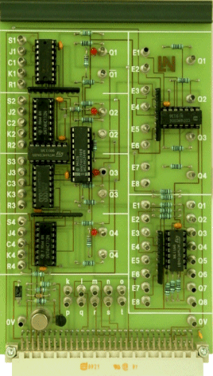

2.8.1. Общая характеристика счётчиков
Счётчик – это устройство, на выходах которого получается двоичный или двоично-десятичный код, определяемый числом поступивших импульсов.
Счётчики могут строиться на T или JK -триггерах.
Основной параметр счётчика – модуль счёта (максимальное число единичных сигналов, которое может быть сосчитано счётчиком).
Счётчики обозначают символами СТ (от англ. counter).
Счётчики представляют собой более высокий, чем регистры, уровень сложности цифровых микросхем, имеющих внутреннюю память. Хотя в основе любого счётчика лежат те же самые триггеры, которые образуют и регистры, но в счетчиках триггеры соединены более сложными связями, в результате чего их функции – сложнее, и на их основе можно строить более сложные устройства, чем на регистрах. Точно так же, как и в случае регистров, внутренняя память счётчиков – оперативная, то есть ее содержимое сохраняется только до тех пор, пока включено питание схемы. С выключением питания память стирается, а при новом включении питания схемы содержимое памяти будет произвольным, случайным, зависящим только от конкретной микросхемы, то есть выходные сигналы счётчиков будут произвольными.
Как следует из самого названия, счётчики предназначены для счета входных импульсов. То есть с приходом каждого нового входного импульса двоичный код на выходе счетчика увеличивается (или уменьшается) на единицу. Срабатывать счетчик может по отрицательному фронту входного (тактового) сигнала (как на рисунке) или по положительному фронту. Режим счета обеспечивается использованием внутренних триггеров, работающих в счетном режиме. Выходы счетчика представляют собой как раз выходы этих триггеров. Каждый выход счетчика представляет собой разряд двоичного кода, причем разряд, переключающийся чаще других (по каждому входному импульсу), будет младшим, а разряд, переключающийся реже других, – старшим.
Счётчик может работать на увеличение выходного кода по каждому входному импульсу; это основной режим, имеющийся во всех счетчиках, он называется режимом прямого счета. Счётчик может также работать на уменьшение выходного кода по каждому входному импульсу; это режим обратного или инверсного счета, предусмотренный в счетчиках, называемых реверсивными. Инверсный счет бывает довольно удобен в схемах, где необходимо отсчитывать заданное количество входных импульсов.
Большинство счетчиков работают в обычном двоичном коде. Например, 4-разрядный счетчик в режиме прямого счета будет считать от 0 (код 0000) до 15 (код 1111), а 8-разрядный – от 0 (код 0000 0000) до 255 (код 1111 1111). После максимального значения кода счетчик по следующему входному импульсу переключается опять в 0, то есть работает по кругу. Если же счет – инверсный, то счетчик считает до нуля, а дальше переходит к максимальному коду 111...1.
Имеются также двоично-десятичные счетчики, предельный код на выходе которых не превышает максимального двоично-десятичного числа, возможного при данном количестве разрядов. Например, 4-разрядный двоично-десятичный счетчик в режиме прямого счета будет считать от 0 (код 0000) до 9 (код 1001), а затем снова от 0 до 9. А 8-разрядный двоично-десятичный счетчик будет считать от 0 (код 0000 0000) до 99 (код 1001 1001). При инверсном счете двоично-десятичные счетчики считают до нуля, а со следующим входным импульсом переходят к максимально возможному двоично-десятичному числу (то есть 9 - для 4-разрядного счетчика, 99 - для 8-разрядного счетчика). Двоично-десятичные счетчики удобны, например, при организации десятичной индикации их выходного кода. Применяются они гораздо реже обычных двоичных счетчиков.
Рис. 23.1. Четырех-битный синхронный последовательный счётчик использующий JK-триггеры.
 Посмотрите видео по данному вопросу
Посмотрите видео по данному вопросу